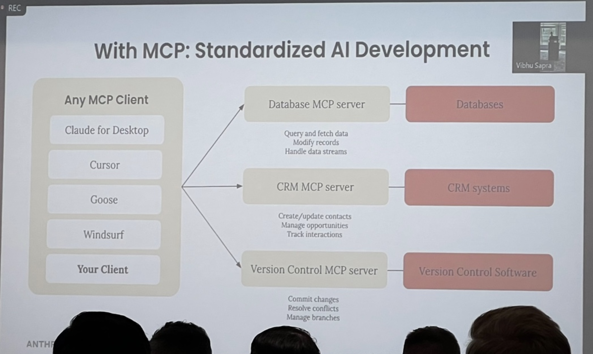
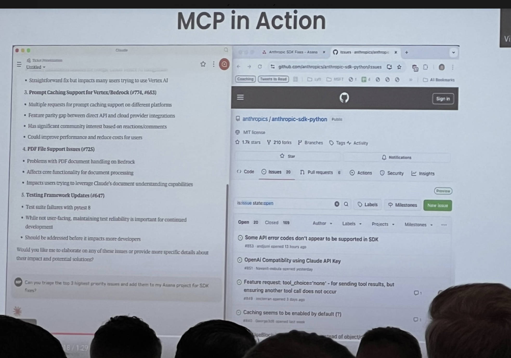
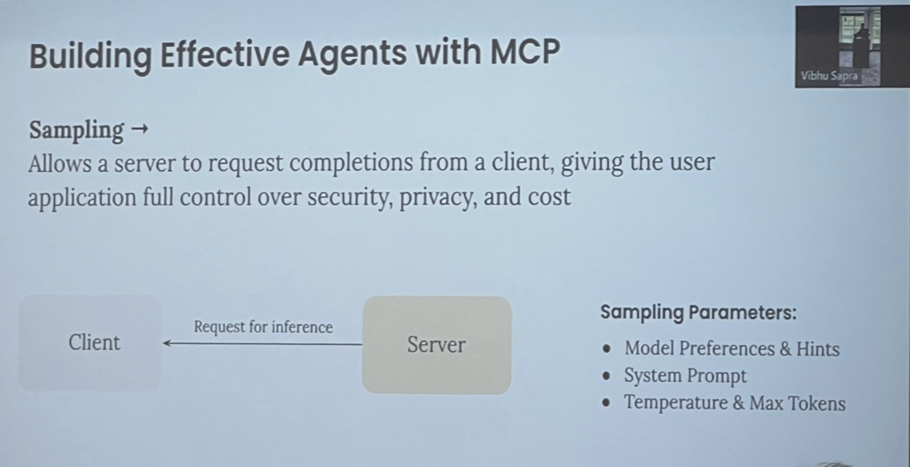
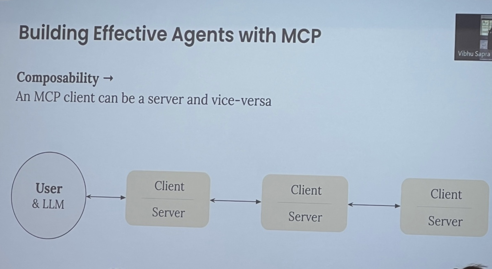
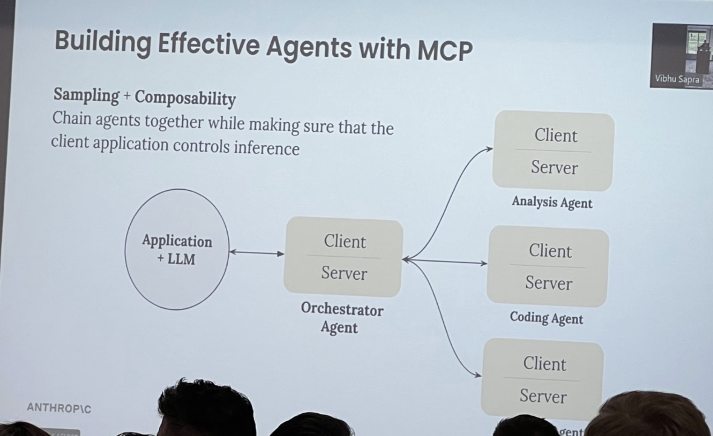
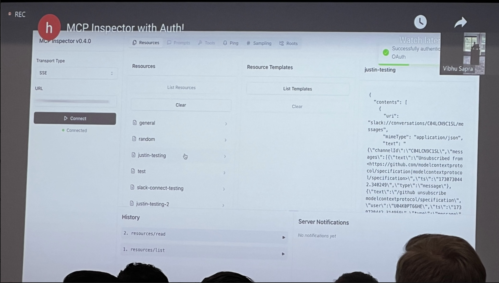
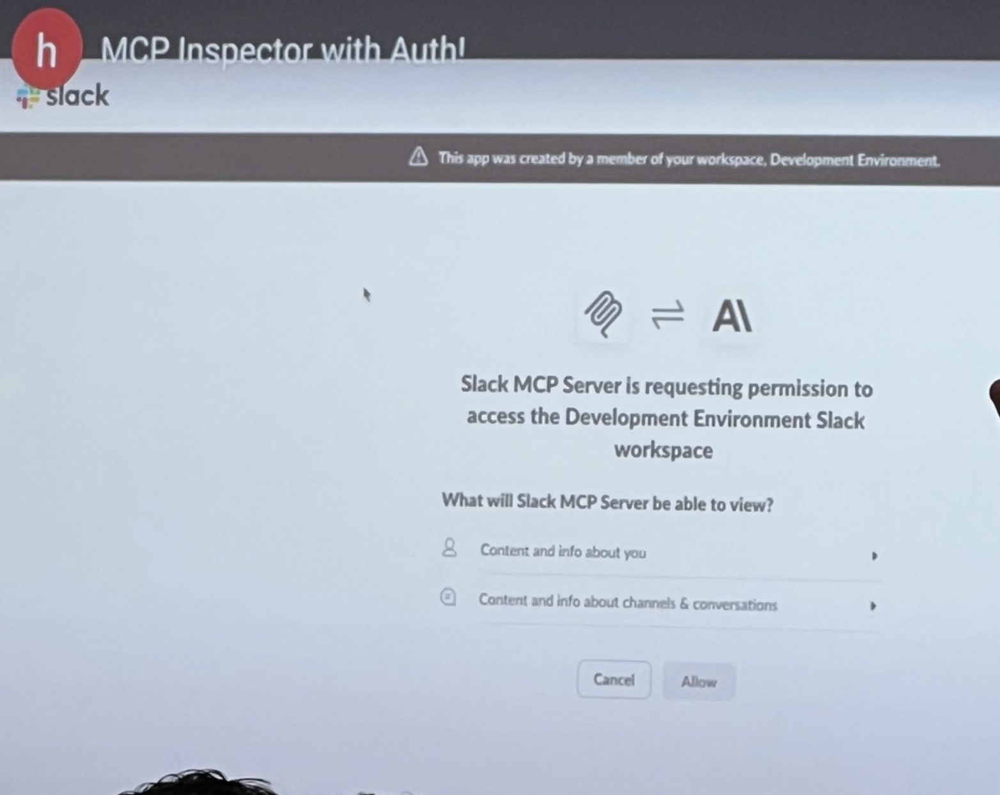
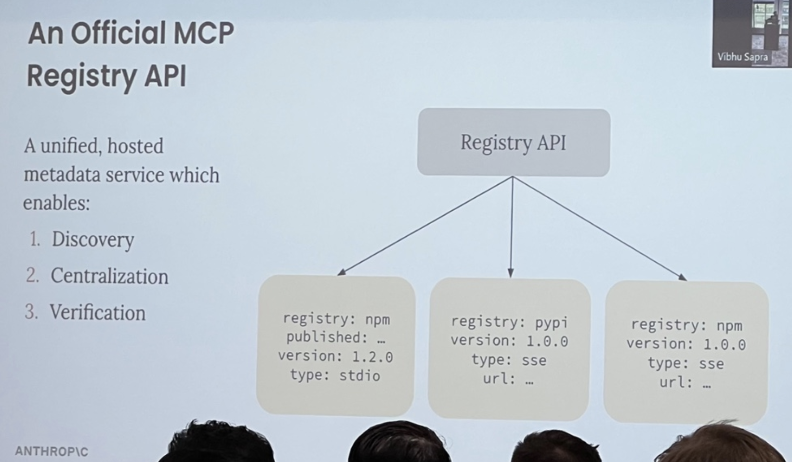
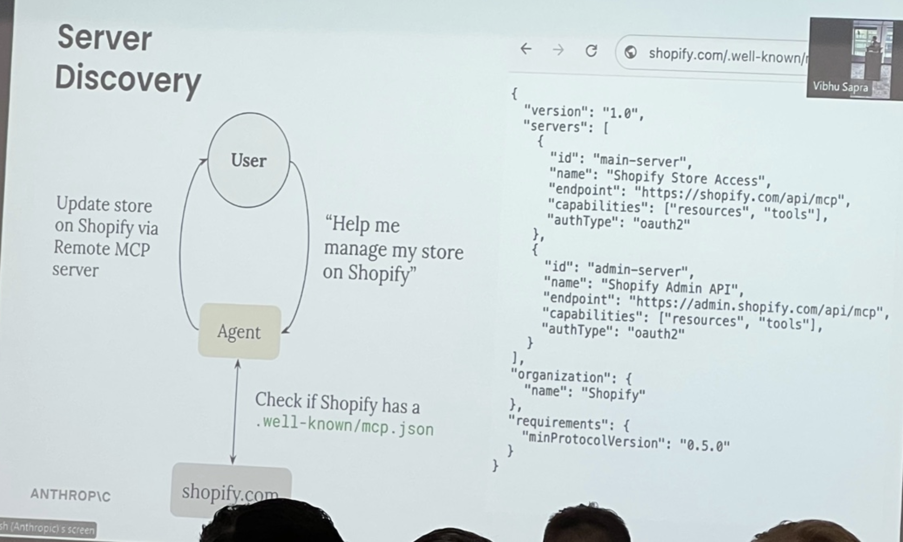
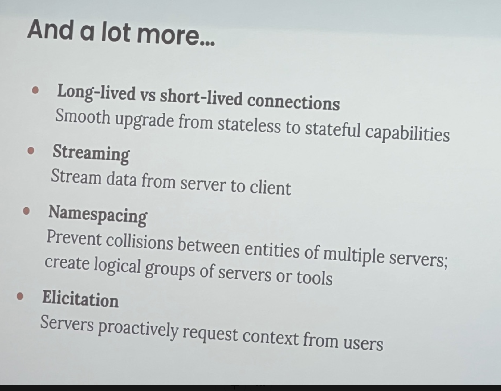

AI/ES/25/ws/1/Building Agents with Model Context Protocol
Building (Agents) with Model Context Protocol
About
Before Pic 01
- Pic 01
- On my left was Person/Mike Christensen, VP Engineering at Fundrise, with quite a bit of experience in Real Estate. Was using IDE/Cline (or was it Windsurf?) to do some Vibe Coding a bit. We talked about MCP and the importance of #Security in Agentic Systems.
- On my right was Person/Hayden Harrow, Co-Founder at Headless Agents (headlessagents.ai). Mike and I got a demo of his product, which allows deploying any type of agent and allowing inter-agent communication. Right now the product is has developers as its target audience.
- Pic 01
intro
- what is MCP
- without mcp - fragmented AI development
MCP - standardized AI development Pic 02

AI Notes
- Any MCP Client:
• Claude for Desktop
• Cursor
• Goose
• Windsurf
• Your Client - MCP Servers and Their Functions:
- Database MCP server
• Query and fetch data
• Modify records
• Handle data streams
→ Databases - CRM MCP server
• Create/update contacts
• Manage opportunities
• Track interactions
→ CRM systems - Version Control MCP server
• Commit changes
• Resolve conflicts
• Manage branches
→ Version Control Software
- Any MCP Client:
My Notes with mcp - you build it once and get adoption everywhere
fast adoption Pic 03
MCP deep dive Pic 04
- Pic 04
My Notes
AI Notes
MCP Client
• Invokes Tools
• Queries for Resources
• Interpolates PromptsMCP Server
• Exposes Tools
• Exposes Resources
• Exposes Prompts- Components:
Tools (Model-controlled)
• Functions invoked by the model:
• Retrieve / search
• Send a message
• Update DB recordsResources (Application-controlled)
• Data exposed to the application:
• Files
• Database Records
• API ResponsesPrompts (User-controlled)
My Notes
#Example IDE/Zed AI/Coding Slash Command
- Q - why aren't resources modeled as tools
- langgraph just made adapters to connect to MCP
- a few questions are about "why isn't it a tool"
- a few questions about "why do we need agent frameworks if we need this"
#Q - why do resources and prompts exist, because you can do it with tools
- a - there are more capabilities with tools and resources
- in reality, resources and prompts can be dynamic and interpolated with context from the user or the aplication and the server can return a customized resource or prompt for the task at hand
- client can subscribe to resource, and server can notify the client and tell the client that you need to update the state of your system
- you can do a lot with tools, but MCP isn't just about giving the model more context, it's about getting richer ways to give the application
MCP in Action Demo Pic 06

My Notes
- Claude/Desktop
AI Notes
MCP-Agent: Orchestrator Setup in Python Pic 08
- Pic 08
AI Notes
Sidebar - Project Structure (VS Code project explorer on left)
Code:
main.py(on right)- python
async def example_usage(): server_names = ["filesystem", "fetch"] # Read the research task task_path = Path("task.md") with open(task_path, "r") as f: task = f.read() # Create orchestrator with all agents orchestrator = Orchestrator( llm_factory=AnthropicAugmentedLLM, available_agents=[ search_agent, fact_checker, report_writer, ], plan_type="full", plan_output_path=Path("output/execution_plan.md"), max_iterations=5 ) # Execute the research task result = await orchestrator.generate_str( message=task, request_id="20241022" )
Key Features
My Notes
Here's Windsurf
his claim: #MCP will be "the foundational protocol for agents"
Anthropic/Blog/24/12/Building Effective Agents with #MCP 1 - Pic 09
- Pic 09
My Notes
- now, with MCP
- the idea of an augmented LLM
- takes inputs and outputs
- LLM
- one of the key points of MCP is that the system can discover new capabilities after the agent system is built
- agent is an "augmented LLM" running in a loop
- you can let users of the agent system connect to their data and you as the developer can focus on the core loop
AI Notes
what does this look like in practice - MCP/mcp-agent
mcp-agentis a framework built by lastmile.ai- case study -> research task -> quantum computing impact on cybersecurity
- sub-agents
- we get a
plan.mdand atask.md- Pic 07 My Notes
- to close out this part of demo
- lastmile-ai/mcp-agent: Build effective agents using Model Context Protocol and simple workflow patterns
- question - how do resources and prompts fit in in this case
- questions - how does #MCP fit into evaluations
- question - I'm missing the infrastructure side of this
- Q/My how do we do versioning well with MCP servers
- #Q is there a best practice or a limit to the number of servers you can expose to an LLM?
- today, they are good up to 50 or 100
- but how do you avoid overloading context
- "a tool to search tools" is exciting
- hierarchical systems of tools
- #Observation this reminds me of that LangChain/Blog/25/02/Benchmarking Single Agent Performance
- #Q - they have an entire page on how to make mcp server with claude or llms
- #Q - if these are simple, can lLms gerentate
- #Q are you talking to the owners of the services and the data
- Q/My - how do you handle versioning of tool descriptions and tools available
Building Effective Agents with MCP 1 - cont'd - Pic 09

My Notes
AI Notes
Building effective Agents with MCP - 2 - Pic 10

AI Notes
Building Effective Agents with MCP
Composability →
- Key Insight An MCP/Server can be a server and vice-versa.
Client-Server Chain
User & LLM ←→ Client/Server ←→ Client/Server ←→ Client/Server- The architecture allows for recursive composition where MCP clients can also act as servers.
- Enables modular AI workflows by chaining multiple MCP instances.
My Notes
- microservices and chaining
Q - how do you deal with compounding errors if the system itself is complex and multi-layered
#Q - How do you do observability and how does the first client/server know about the results of the 3rd hop client/server?
#Q - how do you make #MCP able to be #Debuggable
#Q this is similar to Microservices
#Q what if client wants control over the tool call
#Q - what #Debugging patterns have you seen
#Q - how are you thinking about #Security #Good Question
- we're going to bake in Auth
what's coming next
Building effective agents with #MCP - 3 - Pic 11

AI Notes
Building Effective Agents with MCP
Sampling + Composability
Chain agents together while ensuring that the client application controls inference.Architecture
arduino CopyEdit Application + LLM → Client/Server (Orchestrator Agent) ├── Client/Server (Analysis Agent) ├── Client/Server (Coding Agent) ├── Client/Server (Additional Agent)- The Orchestrator Agent acts as the central hub, distributing tasks to specialized agents.
- Each agent functions as both a client and server, supporting modular and scalable AI workflows.
- Enables controlled inference with hierarchical delegation.
My Notes
MCP/Inspector with #Auth Pic 12

AI Notes
MCP Inspector with Slack OAuth Authentication - Example OAuth flow

My Notes
- SSE is the "best way" to do MCP/Servers that are remote
- #Example
- #Slack auth
- the highlight here
- num 1 thing -> remotely hosted servers
- discoverable
- you don't have to mess with stdio
- you can
- this is going to be a big explosion in the number of servers
#Q what about elevating permissions
#Q the server then holds the token -> isn't that a bad thing?
#Q does MCP replace REST in the long term?
#Q - when we wrap our tools with MCP, how do we deal with evals, how do we think about when tools change and regressions happen
#Q how far away in the spec is it
- #Slack auth
AI Notes
MCP/Registry/API #API - 1 - Pic 14

My Notes
- this lets us have something like npm, pypi, Package/Managers for mcp
- how do you determine whether it's sse or stdio
- who built it, is it verified, did Shopify bless this server?
- "this is coming, it's going to be great" - #Quote from Person/Mahesh Murag
#Q can you give more examples of the server calling the client?
#Q does the model have to be in the loop with the LLM
An Official MCP Registry API - Pic 15
- Pic 15
My Notes
AI Notes
- An MCP server registry helps make agents self-evolving by letting them discover and choose their own tools.
Workflow Example: Debugging with Grafana
pgsql CopyEdit User → "Fix the bug based on my Grafana logs" ↓ Agent → Queries Grafana logs & suggests a fix ↓ Agent → Searches for official Grafana server ↓ Agent → Installs & invokes Grafana server ↓ Registry API- Key Idea: Agents can autonomously locate and use the necessary tools by querying the MCP Registry API.
- Enables adaptive AI workflows where agents evolve based on available tools.
Server discovery - Pic 16

My Notes
- #Example - #Shopify
- registry is focused on discovery and ability to find tools from scratch
- if you know you want to talk to shopify, it can check this MCP/.well-known - really nice complement to AI/Computer Use.
- what if you could have that PLUS MCP json (?)
AI Notes
Server Discovery with MCP
Workflow Example: Managing a Shopify Store
Shopify MCP Server Metadata
- json
{ "version": "1.0", "servers": [ { "id": "main-server", "name": "Shopify Store Access", "endpoint": "https://shopify.com/api/mcp", "capabilities": ["resources", "tools"], "authType": "oauth2" }, { "id": "admin-server", "name": "Shopify Admin API", "endpoint": "https://admin.shopify.com/api/mcp", "capabilities": ["resources", "tools"], "authType": "oauth2" } ], "organization": { "name": "Shopify" }, "requirements": { "minProtocolVersion": "0.5.0" } }
Key Features
And a lot more - Pic 17

My Notes
AI Notes
And a lot more...
- Long-lived vs short-lived connections
Smooth upgrade from stateless to stateful capabilities
- Streaming
Stream data from server to client
- Namespacing
Prevent collisions between entities of multiple servers; create logical groups of servers or tools
- Elicitation
Servers proactively request context from users
Q/My
- how exactly do permission boundaries work with #MCP ? he mentions OAuth which has some concept of permission boundaries ...